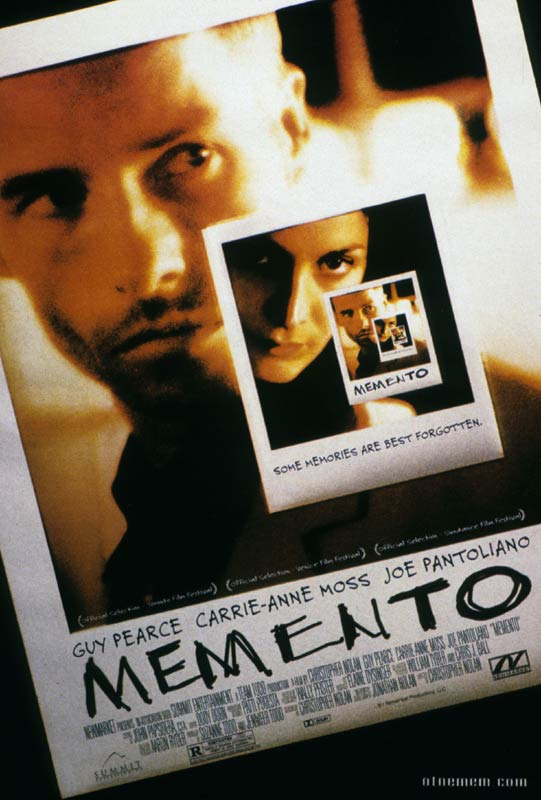

Claire Ziemendorf
Dev Student at Le Wagon
I graduated from the EDHEC Business School in december and now want to learn some technical skills before starting to look for a job. I don't know yet exactly what I want to do after Le Wagon but probably Product Manager or Developer.
My favorite movies
|  |
Memento - Christopher NolanMemento is a 2000 American neo-noir psychological thriller film written and directed by Christopher Nolan, and produced by Suzanne and Jennifer Todd. The film's script was based on a pitch by Jonathan Nolan, who later wrote the story "Memento Mori" from the concept. It stars Guy Pearce, Carrie-Anne Moss, and Joe Pantoliano. |
The Big Lebowski - Joel and Ethan CoenThe Big Lebowski is a 1998 American crime comedy film written, produced, and directed by Joel and Ethan Coen. It stars Jeff Bridges as Jeffrey "The Dude" Lebowski, a Los Angeles slacker and avid bowler. He is assaulted as a result of mistaken identity, after which The Dude learns that a millionaire also named Jeffrey Lebowski was the intended victim. The millionaire Lebowski's trophy wife is kidnapped, and he commissions The Dude to deliver the ransom to secure her release; but the plan goes awry when the Dude's friend Walter Sobchak (John Goodman) schemes to keep the ransom money. Julianne Moore and Steve Buscemi also star, with David Huddleston, John Turturro, Philip Seymour Hoffman, Sam Elliott, Tara Reid, David Thewlis and Flea appearing in supporting roles. |
|
 |
The Usual Suspects - Bryan SingerThe Usual Suspects is a 1995 American neo-noir[3] mystery film directed by Bryan Singer and written by Christopher McQuarrie. It stars Stephen Baldwin, Gabriel Byrne, Benicio del Toro, Kevin Pollak, Chazz Palminteri, Pete Postlethwaite, and Kevin Spacey. |